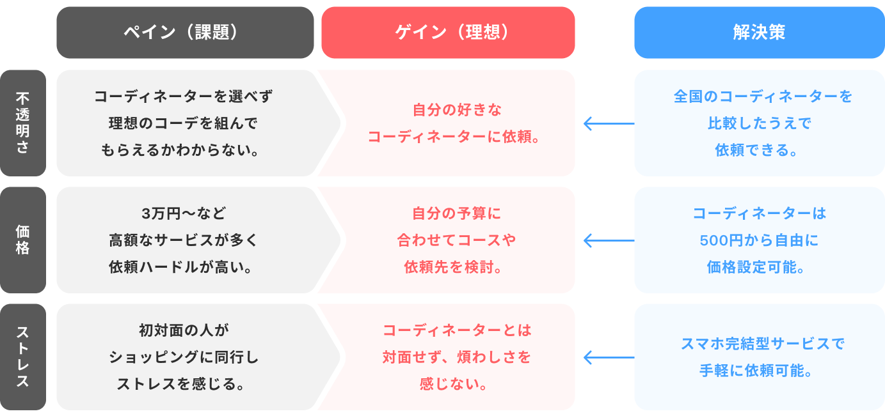
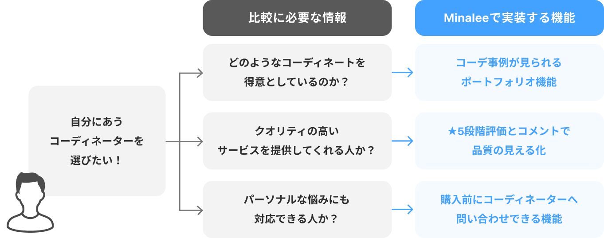

ファッションコーディネーターと
ユーザーをつなぐ、
プラットフォーム型アプリ。
Overview概要
● このサービスを一言で表すと
「コーディネーターとのマッチング」で、
「ファッションの提案を、気軽に受けられる」サービスです。
-
●︎︎ 業界：ファッション
●︎ ボリューム：約20ページ
●︎ ツール：Figma
●︎ 使用言語：React
-
●︎ 期間：
・企画、要件定義 1ヶ月
・ワイヤーフレーム 1ヶ月
・デザイン 1.5ヶ月
・プログラミング 9ヶ月
-
● 体制：
・デザイナー 1名
・フロントエンドエンジニア 2名
・バックエンドエンジニア 1名
どんなアプリ？
このアプリはファッションが苦手な人と、コーディネーターをマッチングするサービスです。
「自分に似合う服がわからない」「買い物で迷ってしまう」という人の「スタイリングサービスは敷居が高い」という悩みを解決します。オンライン完結なので気軽に相談でき、自分に似合うスタイルをプロに提案してもらうことができます。
また、コーディネーターは、撮影中やイベント中に待ち時間が発生してしまうことが多い職業なのですが、そんなスキマ時間も有効活用してもらうことも目的としています。
{kind=link}
Service flowサービスの流れ

コーディネーターを探す
自分好みのコーディネーターを検索します。
コーディネートを依頼する
サービス内容の詳細を確認し、気に入った人に依頼します。

提案してもらう
依頼に関するやり取りをし、提案を受け取引完了します。
Processプロセス
{kind=link}
制作にあたって気をつけた点
- 低コスト開発と早期リリースの方針のため、要件をWant / Mustに分類したり、デザインパターンを出してエンジニアと連携するなどし、開発コストにも配慮してデザインしました。
- 使いやすさや見やすさだけでなく、ユーザーが「登録したい」と思える仕様作りについて、実例や参考記事を調べたりしながらデザインしました。
- 視覚的な使いやすさや手軽さが重要な場面では、オブジェクト指向UIを取り入れることを意識してデザインしました。
01 要件定義
解決したい課題
一般的なパーソナルスタイリングサービスでは、依頼者が企業とコンタクトをとり、所属しているコーディネーターがランダムで担当者として割り振られ、スタイリングしたりショッピングに同行したりする形態が多くなっています。さらに、価格帯も数万円〜が一般的で、依頼者の心理的、金銭的な負担が大きい部分があります。
そこで、どうすればこれらのペイン（課題）を解決し、ゲイン（理想の状態）へ転換できるかを考えました。
課題に対する解決策
具体的な解決策として、コーディネーター自身によってサービス価格やプロフィールを設定可能にしています。これにより、依頼者はたくさんのコーディネーターの中から、自分の好きなスタイリングをしている人や、予算感が合う人を選んで繋がることができます。
また、課題の洗い出しにより、コーディネーターの比較しやすさも重要となることが明確化しました。

{kind=link}
課題に対する解決策の具体化
さらに、コーディネーターを比較する際に必要となる情報を検討し、その提供手段について具体化しながら、実装する機能の選択をしていきました。

{kind=link}
画面遷移図をもとに要件定義
仮作成した画面遷移図をもとに、要件定義を行いました。何の機能が必要なのか、課題を解決するためのアイディアを出したりたり、画面遷移図をアップデートしました。また、早期リリースのため、Want要件とMust要件に分類しながら一連の体験の中での優先づけも行い、注力すべき機能や画面の整理も行いました。
▼ 実際に使用していた画面遷移図
▼ 最終的に初期Must要件として確定した、フローのイメージ（取引キャンセルなどは除く）
{kind=link}
{kind=link}
02 レイアウト設計
ワイヤーフレーム作成
ここまでの前提を元に、使い勝手の良さを重視し、オブジェクト指向UIを取り入れながら全体のワイヤーフレームを作成しました。
途中、私の資格勉強のため、トークルーム周りと過去の取引を閲覧できる画面のワイヤーフレームは、作成を代理していただきました。ここは後ほど私の方でフィードバックをし、手を加える形となっています。（後述）
{kind=link}
ワイヤーフレーム作成を通して行った提案
要件定義の時に詰めきれていなかった点や、ワイヤーフレーム作成時に気になった箇所、他社ページを分析して参考になったコンテンツなどを提案し、すり合わせを行いました。
会員登録率の向上
１. 消費者行動理論（AIDMAやAISAS）の適用
当初は会員登録をしてからでないと、コーディネーターの一覧などは見ることができない構成が想定されていましたが、会員登録前にもコーディネーターの詳細までは閲覧できるようにすることを提案しました。
これは、消費者が商品やサービスを購入するまでの心理プロセスを段階化した「消費者行動理論（AIDMAやAISAS）」というマーケティングのフレームワークにのっとった考えです。これにより、依頼者が
CVを達成したくなる構成になることで、会員登録率が上がるだけでなく、リリース後に配信する広告の費用対効果も上がると考え提案しました。こちらは、Must要件として採用されました。
{kind=link}
２. CVボタンの文言設定
上記に伴って、CVボタンのリンク先を切り替える仕様にすることを提案しました。
会員登録後は「依頼する」となっていますが、会員登録前もこの表記のまま、飛び先だけ会員登録フォームにすることを提案しました。理由は、この画面を見ているユーザーは、前画面のWelocomeページや、コーディネーターの一覧ページで、①すでに新規会員登録ボタンを見ていますが、会員登録はせずにコーディネーターの詳細を見に来ていること。また、コーディネーターの詳細を見る次のフェーズである、②「依頼したい」という心理になっていることが考えられます。そのため、会員登録を促すよりも、依頼者のニーズを解消する文言を設定した方がCV率が上がると考え、依頼するボタンのままにしておくことを提案しました。こちらもMust要件として採用されました。
回遊率の向上
３. おすすめ機能の実装
ECモールやZOZOTWONを参考に、コーディネーターの詳細ページ内に、似ているジャンルのコーディネーターをおすすめとして出すことを提案しました。
初期要件では、コーディネーターのプロフィールページ内に導線が全くなく、閲覧者は前画面に戻るしかありませんでしたが、これにより、今見ているコーディネーターにあまり魅力を感じなかった場合も、自然と次のコーディネーターを見ることができ全体の回遊率が上がると考えたためです。こちらは、Want要件として採用されました。
{kind=link}
アクティブユーザーの活性化
5. 受付休止中のコーディネーターも表示を残す仕様へ
フリマアプリのメルカリでは、あえて「売り切れ品」を残すことで、「次はまめにチェックしよう」「売り切れになる前に購入しよう」という購買意欲を掻き立て、継続率や購入率を上げているという実証例があります。参考記事はこちら。
これを参考に、満枠対応中の人気コーディネーターを非表示にするのではなく、しばらくは表示を残しておき、1ヶ月以上休止状態が続く場合に非表示にする。という仕様を提案しました。これにより、人気コーディネーターの順番待ちをしたいユーザーが発生する効果が期待でき、さらに、アクティブでないコーディネーターを選別して非表示にすることができます。こちらはMust要件で採用されました。
{kind=link}
03 ブラッシュアップ
フィードバックとブラッシュアップ
作成したワイヤーフレームを元に、下記のような基準に基づいてフィードバックをしながら、ブラッシュアップを行いました。
・開発コストを抑えた作りになっているか
・迷うことなく目的を達成できる設計となっているか
・前後の画面遷移で違和感がないか
・拡張性に問題がないか（Want要件を達成できるか）
私からは、ワイヤーフレーム作成の代理をしていただいた、トークルーム、トークルームの一覧、過去の取引を閲覧できる過去取引一覧の画面についてフィードバックを行い、ブラッシュアップしました。
{kind=link}
{kind=link}
04 UI作成
ロゴ、アプリ名、カラーの定義
ロゴ、アプリ名、カラーの定義を行いました。
ロゴは、コーディネーターは黒背景、依頼者は白背景と背景色を切り替えたいという要件があったため、白背景、黒背景でも馴染む、汎用性の高いデザインにしました。アプリ名は、このサービスを通して「身なり」をよくするという由来から、「ミナリー」を採用。プライマリーカラーはロゴと同色のブルーを採用しています。様々なファッションジャンルの人に馴染むよう、あえてファッション性の高いベージュや黒、金などは使わず、男女問わず親しみやすいカラーにしました。
キャッチコピー作成
Welcomeページに掲載するキャッチコピーも作成しました。
最初は、私の中では「大切な日から、いつものコーデまで
あなたの”身なり”をプロに相談」というキャッチコピーを設定しようと考えており、そのキーワードの適正を確認するためにGoogle検索の予測入力補完や、拡張機能のKeyword
surferを使い、ビッグキーワードの決定、スモールキーワード、関連キーワード、月刊検索ボリュームの調査を行いました。
{kind=link}
スタイリスト or
コーディネーターの単語で比較した場合、スタイリストの方が検索ヒットや上位表示を狙いやすそうな印象ですが、スタイリストでは関連キーワードがほとんど出てこない状況でした。理由は、おそらくスタイリストは専門的な印象が強く、業界に精通していない人やファッションが苦手な人はコーディネーターという単語の方が身近なためと予想。
また、どちらもボリュームの多いワードのため、検索するときは複数単語組み合わせると想定し、関連キーワードの豊富なコーディネーターをメインにする方針をとりました。
さらに、ここに掲載しきれなかった情報も含め、ファッションが苦手な人は下記のようなキーワードで探している印象を受けました。
{kind=link}
この調査を受け、 コーディネーターを自分で選べるという強みをアピールしつつ、「自分に似合うコーディネートが分からない」「似合う服を選んでくれる」などのニーズを持っている人に刺さりやすいと考えられるキャッチコピーを提案し、採用されました。
{kind=link}
全体のUIビジュアル作成
ここまでの前提を元にUIビジュアルのデザインをしました。
コーディネーターは黒背景、依頼者は白背景と、色を切り替えたいという要件がありました。そのため、コーディネーターと依頼者の配色が連動し、なるべく一括管理できるようにデザインやカラーパネルを作成し、開発コストを抑えました。
{kind=link}
{kind=link}